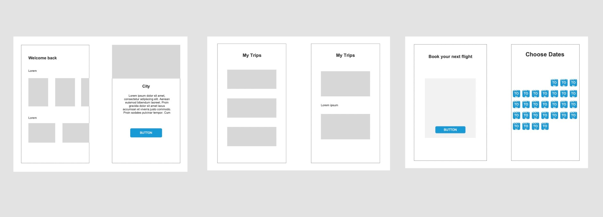
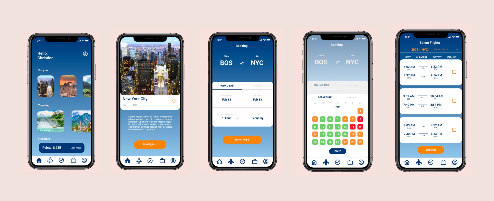

Overview
A redesign of the popular flight company jetBlue's mobile app (hypothetical).
Timeline: 1-2 weeks
Role: Sole UX Designer
Target Audience: New jetBlue customers, people aged 19-30
- Deliverables
- Increase flights booked, rather than just checked-in.
- Highlight cheaper days to fly when selecting dates
- Add to the "My Trips" page where you can save and create trips and itineraries
Research
- User #1: Female, 19
- Main concern: I'm a broke college studnet. Will jetBlue show me sales and the cheapest days to fly?
- User #2: Male, 24
- Main concern: I travel a lot for work and like to explore the cities I'm in. Does jetBlue have a feature that will make this easier for me?
- User #3: Female, 30
- Main concern: I'm not the biggest fan of using my phone to book flights. Is jetBlue going to be less confusing for me?
Wireframes

Prototypes
